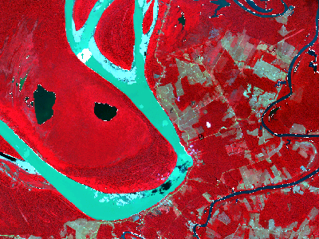
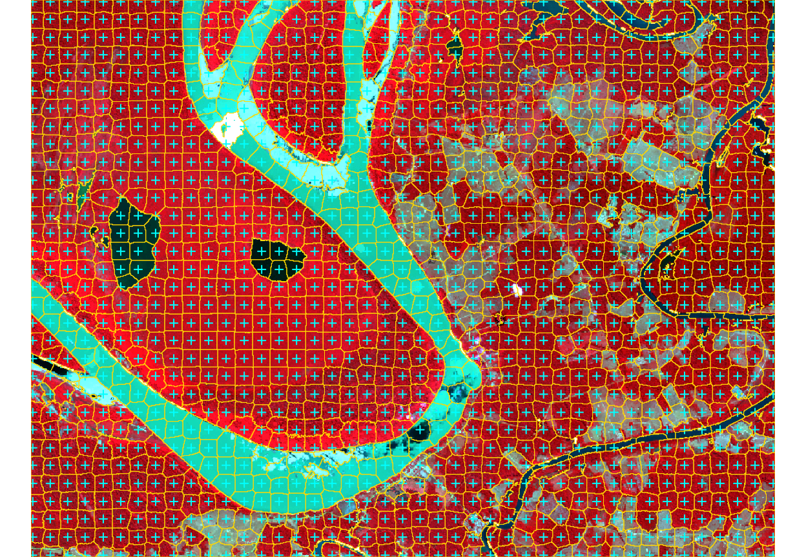
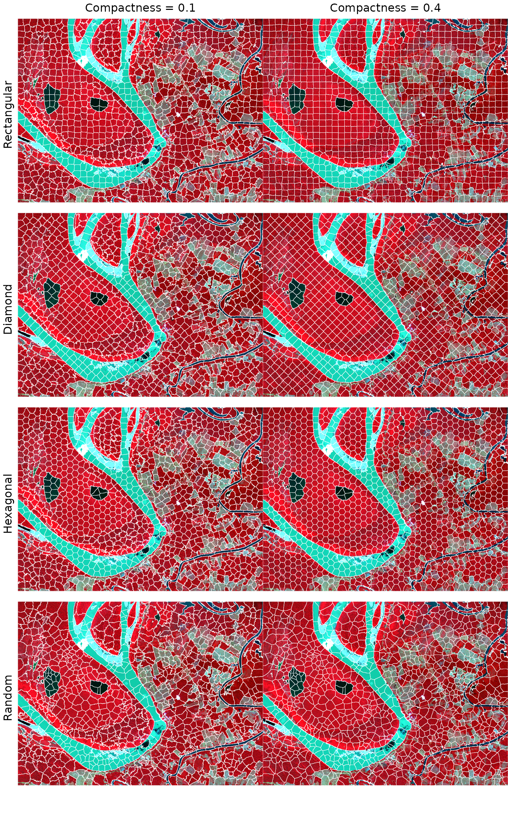
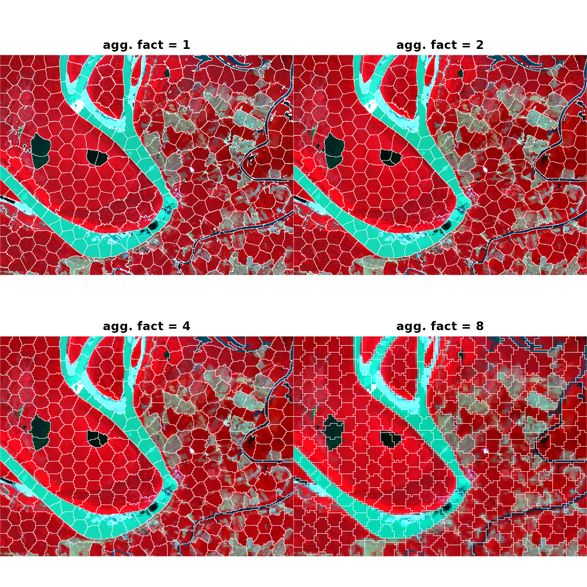

SNIC Segmentation Pipeline - SpatRaster
Source:vignettes/snic-spatraster-pipeline.Rmd
snic-spatraster-pipeline.RmdIntroduction
This vignette revisits the SNIC segmentation pipeline, originally
proposed by Achanta and Susstrunk (2017). It works with
terra::SpatRaster objects, instead of a small in-memory RGB
array. We will use the Sentinel-2 subset (demo-geotiff)
that ships with the package. Every step reflects a typical
remote-sensing workflow: load raster bands, seed the image, run
snic(), and visualize the resulting segments.
Array workflow: If you prefer to start from in-memory arrays, see the SNIC Segmentation Pipeline - Arrays vignette for a compact tutorial that mirrors this tutorial without the geospatial dependencies.
Sentinel-2 preparation with terra
library(terra)
data_dir <- system.file("demo-geotiff", package = "snic", mustWork = TRUE)
band_files <- file.path(
data_dir,
c(
"S2_20LMR_B02_20220630.tif",
"S2_20LMR_B04_20220630.tif",
"S2_20LMR_B08_20220630.tif",
"S2_20LMR_B12_20220630.tif"
)
)
s2 <- terra::rast(band_files)
names(s2) <- c("B02", "B04", "B08", "B12")
s2
#> class : SpatRaster
#> size : 768, 1024, 4 (nrow, ncol, nlyr)
#> resolution : 20, 20 (x, y)
#> extent : 429960, 450440, 9046000, 9061360 (xmin, xmax, ymin, ymax)
#> coord. ref. : WGS 84 / UTM zone 20S (EPSG:32720)
#> sources : S2_20LMR_B02_20220630.tif
#> S2_20LMR_B04_20220630.tif
#> S2_20LMR_B08_20220630.tif
#> S2_20LMR_B12_20220630.tif
#> names : B02, B04, B08, B12The four bands cover the blue (B02), red (B04), near-infrared (B08),
and short-wave infrared (B12) portions of the spectrum.
snic package comes with a helper function to plot
false-color composites easily. snic_plot() understands both
arrays and SpatRaster inputs.
snic_plot(s2, r = "B08", g = "B04", b = "B02")
Seeds creation
With a SpatRaster input, snic_grid()
returns a data frame with latitude/longitude columns that can be
inspected or stored for reproducibility.
seeds_rect <- snic_grid(s2, type = "rectangular", spacing = 24, padding = 2)
head(seeds_rect)
#> lat lon
#> 1 -8.491482 -63.63589
#> 2 -8.495824 -63.63590
#> 3 -8.500346 -63.63591
#> 4 -8.504688 -63.63592
#> 5 -8.509210 -63.63592
#> 6 -8.513733 -63.63593spacing and padding parameters control the
spacing (in pixels) between seeds and the padding (in pixels) around the
image, respectively.
Run SNIC
The number of seeds controls the number of output segments. Seeds
outside the image are ignored. The compactness parameter
balances spatial proximity and spectral similarity; moderately low
values emphasize spectral contrast, which is useful for multispectral
imagery with distinct land-cover types. Here we use a compactness of
0.3.
seg_rect <- snic(s2, seeds_rect, compactness = 0.3)
seg_rect
#> SNIC segmentation
#> Size (rows x cols): 768 x 1024
#> Viewing first rows and columns:
#> class : SpatRaster
#> size : 6, 6, 1 (nrow, ncol, nlyr)
#> resolution : 20, 20 (x, y)
#> extent : 429960, 430080, 9061240, 9061360 (xmin, xmax, ymin, ymax)
#> coord. ref. : WGS 84 / UTM zone 20S (EPSG:32720)
#> source(s) : memory
#> name : snic
#> min value : 1
#> max value : 1The result is a snic object that contains a
SpatRaster with same spatial extent as input but with one
layer with integer labels. It also contains a data frame with
per-segment feature means and centroids. The SpatRaster can
be obtained by calling snic_get_seg(). The labels are
1-based and correspond to the seeds in the order they were provided.
Segments visualization
Here we plot the seed locations and the resulting segments on top of a false-color composite.
snic_plot(
s2,
r = "B08", g = "B04", b = "B02",
stretch = "lin",
seeds = seeds_rect,
seeds_plot_args = list(pch = 3, col = "#00FFFF", cex = 0.6),
seg = seg_rect,
seg_plot_args = list(border = "#FFD700", col = NA, lwd = 0.5)
)
The segmentation result is a single-band SpatRaster
whose values correspond to integer labels. You can extract statistics
per segment or convert them to polygons via
terra::as.polygons().
Comparative grid types and compactness values
All grid types available through snic_grid() operate on
SpatRaster objects as well. Using the same Sentinel-2
subset, we compare rectangular, diamond, hexagonal, and random seeds
combined with two compactness settings.
seeds_rect <- snic_grid(s2, type = "rectangular", spacing = 26)
seeds_diam <- snic_grid(s2, type = "diamond", spacing = 26)
seeds_hex <- snic_grid(s2, type = "hexagonal", spacing = 26)
set.seed(42)
seeds_rand <- snic_grid(s2, type = "random", spacing = 26)
grids <- list(
seeds_rect, seeds_diam,
seeds_hex, seeds_rand
)
results <- lapply(grids, function(seeds) {
list(
snic(s2, seeds, compactness = 0.1),
snic(s2, seeds, compactness = 0.4)
)
})
op <- par(mfrow = c(4, 2), oma = c(2, 2, 2, 0))
for (res in results) {
snic_plot(
s2,
r = "B08", g = "B04", b = "B02",
seg = res[[1]],
seg_plot_args = list(border = "#FFFFFF", col = NA, lwd = 0.4),
mar = c(1, 0, 0, 0)
)
snic_plot(
s2,
r = "B08", g = "B04", b = "B02",
stretch = "lin",
seg = res[[2]],
seg_plot_args = list(border = "#FFFFFF", col = NA, lwd = 0.4),
mar = c(1, 0, 0, 0)
)
}
mtext("Compactness = 0.1", side = 3, outer = TRUE, at = 0.25, line = 0.5)
mtext("Compactness = 0.4", side = 3, outer = TRUE, at = 0.75, line = 0.5)
mtext("Rectangular", side = 2, outer = TRUE, at = 3.5 / 4, line = 0.5, las = 3)
mtext("Diamond", side = 2, outer = TRUE, at = 2.5 / 4, line = 0.5, las = 3)
mtext("Hexagonal", side = 2, outer = TRUE, at = 1.5 / 4, line = 0.5, las = 3)
mtext("Random", side = 2, outer = TRUE, at = 0.5 / 4, line = 0.5, las = 3)
par(op)Rectangular and diamond layouts align segments with cardinal
directions, whereas hexagonal and random seeds spread centers more
evenly in all directions. Higher compactness induces smoother, more
rounded superpixels, so the right column contains fewer jagged
boundaries than the left one. Regardless of the seed geometry, the
workflow stays the same: read the multi-band raster, place seeds in
geographic space, and call snic() with the desired
compactness.
Fixed hexagonal seeds across resolutions
Spatial datasets often come in multiple resolutions—for example, you
might start from a 10 m grid and also work with 20 m or 40 m aggregates
for faster experimentation. Because snic_grid() returns
seeds with geographic coordinates, the same seed set can be re-used
across rasters that share the same extent and CRS. Below we generate a
hexagonal grid once, then aggregate the Sentinel-2 raster to four
different resolutions with terra::aggregate() and run
snic() on each version without touching the seeds.
seeds_hex <- snic_grid(
s2,
type = "hexagonal",
spacing = 50,
padding = 5
)The figure below compares the resulting segments.
op <- par(mfrow = c(2, 2), oma = c(0, 0, 2, 0))
agg_facts <- c(1L, 2L, 4L, 8L)
for (fact in agg_facts) {
s2_agg <- terra::aggregate(s2, fact = fact, fun = "mean", na.rm = TRUE)
seg_agg <- snic(s2_agg, seeds_hex, compactness = 0.2)
snic_plot(
s2_agg,
r = "B08", g = "B04", b = "B02",
seg = seg_agg,
seg_plot_args = list(border = "white", col = NA, lwd = 0.4),
main = sprintf("resolution %d m", fact * 20)
)
}
par(op)References
Achanta, R., & Susstrunk, S. (2017). Superpixels and polygons using simple non-iterative clustering. Proceedings of the IEEE Conference on Computer Vision and Pattern Recognition (CVPR). doi:10.1109/CVPR.2017.520